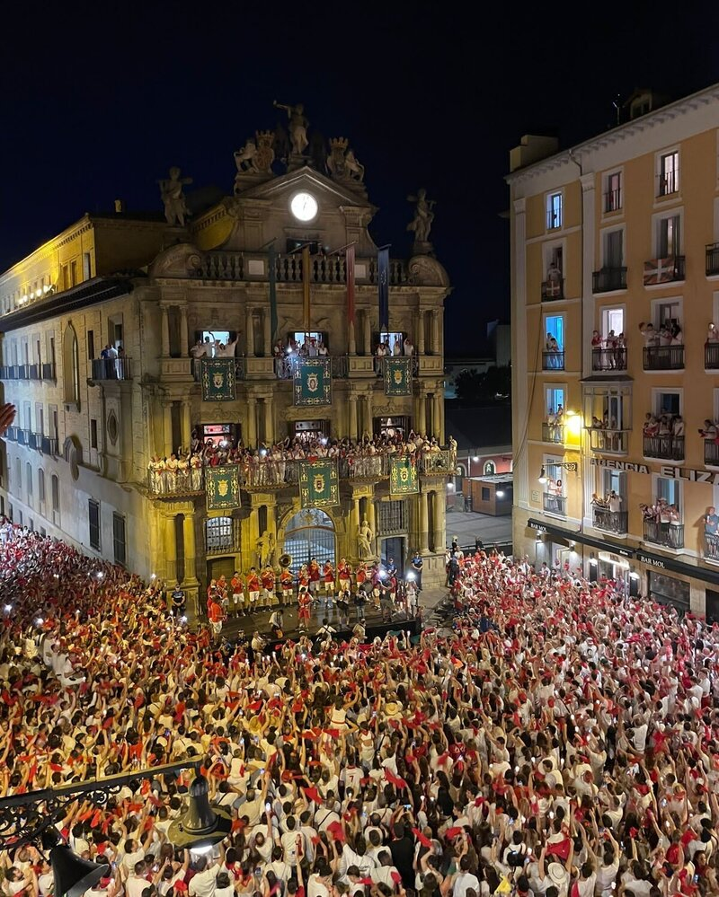
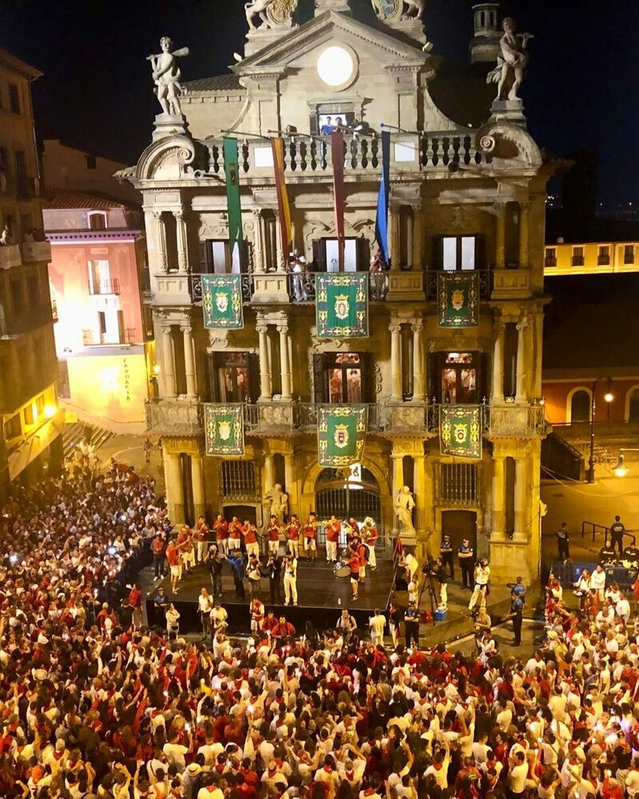
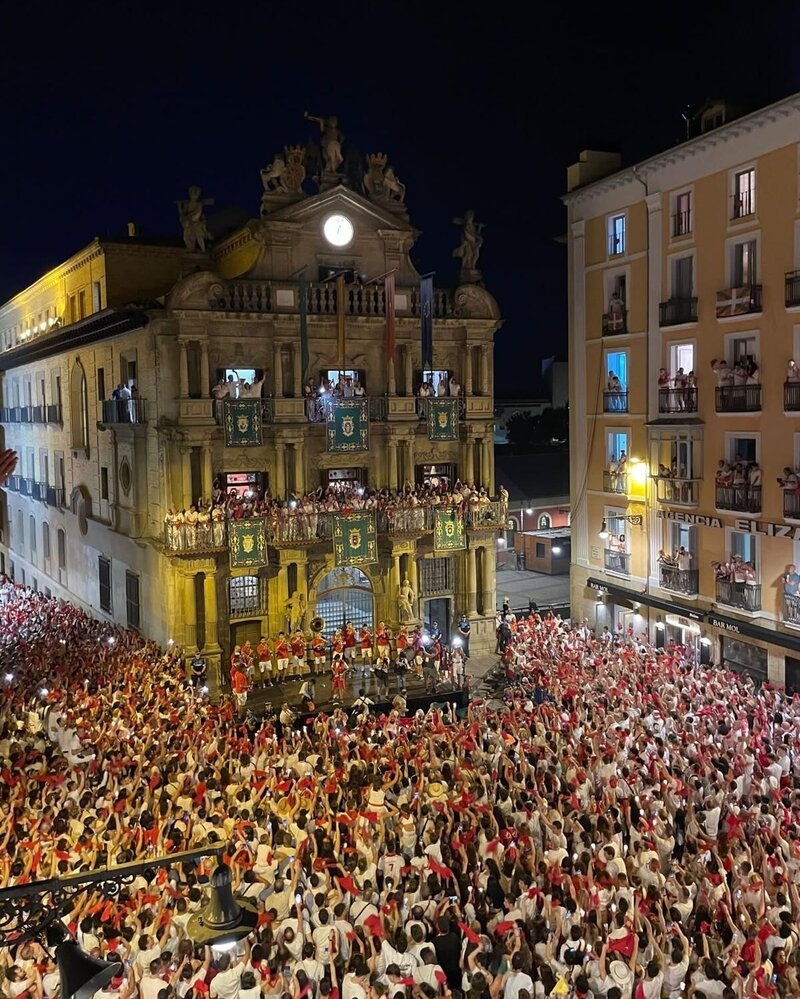
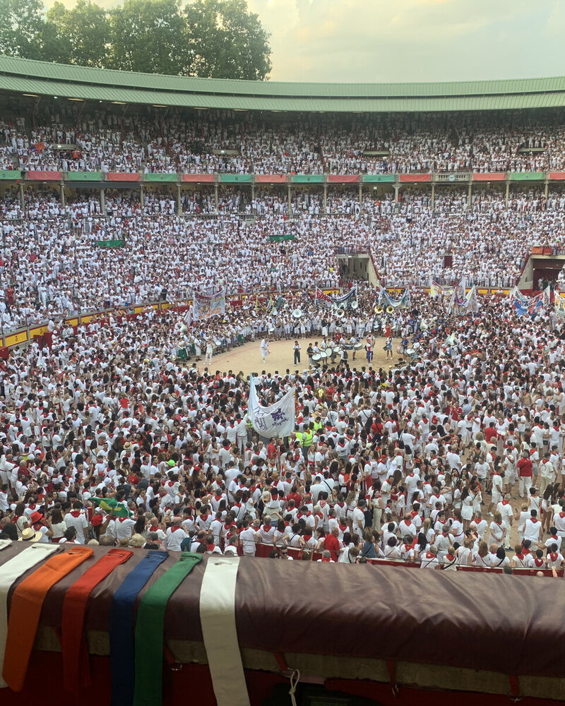

Qué hacer en San Fermín
Una guía completa con todos los planes, momentos y experiencias para vivir San Fermín de verdad.
Leer másEl “Pobre de mí” es el acto que pone fin a las fiestas de San Fermín. Cada 14 de julio a medianoche, miles de personas se reúnen en la Plaza del Ayuntamiento para despedir la fiesta con velas encendidas y un canto colectivo que marca el cierre oficial.
Tiene lugar la noche del 14 de julio a las 00:00 en la Plaza del Ayuntamiento de Pamplona. Es uno de los momentos más multitudinarios y simbólicos de toda la semana.
La alta concentración de personas hace que el acceso a la plaza sea complicado y que la visibilidad desde la calle sea muy limitada. Además, el ambiente puede resultar intenso si no se gestiona bien el espacio.
Si quieres entender mejor cómo se vive este momento y qué opciones existen, puedes ver esta guía sobre experiencias exclusivas en San Fermín.
Existen distintas formas de estar presente en este momento:
Cada opción transmite algo distinto, pero la perspectiva cambia completamente la forma de vivirlo.
Todas las propuestas parten de una misma idea: vivir el cierre de la fiesta con perspectiva. A partir de ahí, cambia el tipo de experiencia.







Las opciones varían en función de la ubicación y el tipo de acceso. De forma orientativa, se sitúan en un rango intermedio dentro de las experiencias de San Fermín, normalmente entre 90€ y 180€ por persona.
Más allá del precio, lo importante es cómo quieres vivir el momento: más inmersivo o con más perspectiva, ya que la plaza alcanza su máxima ocupación.
Cuando nos escribes, te proponemos opciones concretas adaptadas a lo que buscas, explicándote claramente qué cambia en cada caso.
El “Pobre de mí” no es solo un acto, es una emoción compartida. Desde un balcón, ese momento se vive con más calma, permitiendo entender lo que realmente significa.
Es una forma de cerrar San Fermín desde la perspectiva, sin perder la intensidad del momento.
En nuestro caso, trabajamos con balcones privados en la Plaza del Ayuntamiento, lugar donde se concentra todo el acto. Te proponemos opciones según el nivel de intensidad o comodidad que buscas.
Este es el momento en el que todo se detiene y la ciudad se despide...hasta el año siguiente: comienza la cuenta atrás y "Ya falta menos para San Fermín!".
Nuestra forma de compartirlo es ofrecer una manera más cuidada de vivirlo, manteniendo la emoción pero con una experiencia más consciente, en línea con todo lo que hacemos como equipo.
Cuéntanos cómo te gustaría vivir este momento y te proponemos opciones a medida.
No tiene nada que ver con estar abajo. Mucho mejor.
El Pobre de mí marca el final de la fiesta, que ha empezado 9 días antes con el Chupinazo, donde la ciudad se pone en marcha.
Y si lo que buscas es vivir San Fermín de una forma más completa o adaptada a tu ritmo, puedes explorar también las experiencias a medida, donde combinamos distintos momentos según lo que realmente quieres vivir.
Porque el final también forma parte de la historia.
Una guía completa con todos los planes, momentos y experiencias para vivir San Fermín de verdad.
Leer más
Qué incluyen, cómo funcionan y cómo elegir experiencias personalizadas para vivir San Fermín con más contexto, acceso y criterio.
Leer guíaAlgunas experiencias no terminan cuando acaba el evento. Para grupos, empresas o momentos especiales, podemos acompañarlo con piezas diseñadas específicamente para la ocasión.
Desde elementos sencillos hasta detalles más cuidados, todo se plantea como una extensión natural de la experiencia.
Porque a veces lo que se lleva puesto también forma parte de lo vivido.